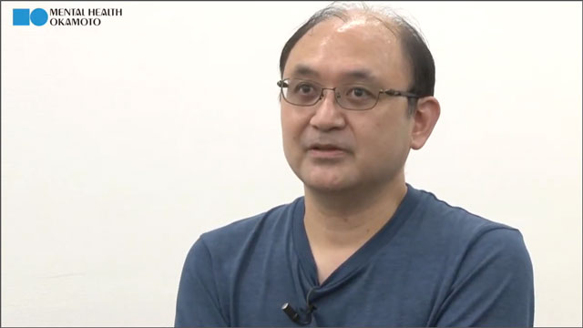
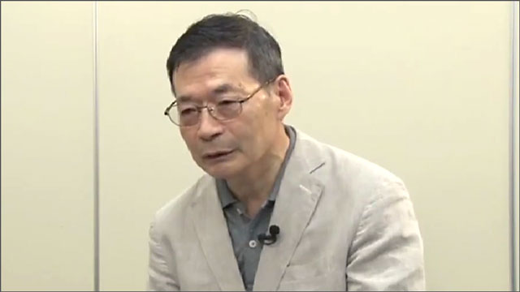
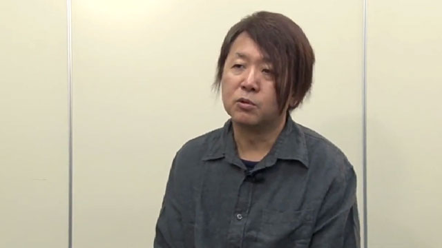
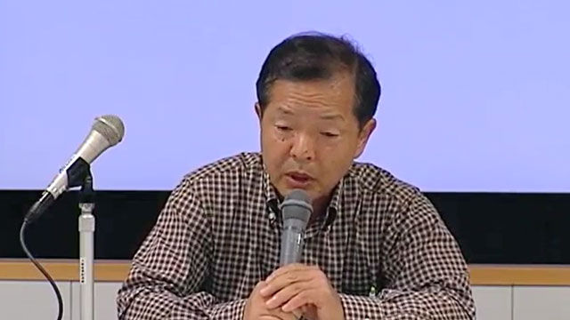

動画のテーマ：克服体験談（社交不安症）
このビデオは、当財団がYouTube公式チャンネルで定期的に配信している心の健康ビデオセミナーの講演内容の一部を視聴できる動画です。動画のテーマは社交（社会）不安症（対人恐怖症）の克服体験談です。



視聴動画（13） 9:02
視線・醜形・対人恐怖
山本啓二（仮名）
家庭環境がきっかけで、自己視線恐怖（対人恐怖）や醜形恐怖に悩みましたが、その後、社会復帰施設での交流や生活の発見会を通じて症状を克服していく体験談です。
動画を見る
視聴動画（7） 6:29
対人恐怖症と強迫症
藤川雄介（仮名）
中学3年生の頃から鼻の疾病恐怖にとわられ38歳の頃、鈴木知準診療所（森田療法の病院）に入院し、退院後、頭重感の消失に気づきます。その後、生活の発見会や生泉会（強迫の専門グループ）に入会し、強迫症を全治していきます。
動画を見る
視聴動画（4） 3:24
パニック（心臓神経症）と不安神経症
須崎真司（仮名）
子供の頃に心臓麻痺の経験から、電車の中でパニック発作への予期不安にとらわれるようになる。医師には不安神経症と告げられ、その後森田療法と出会い、「恐怖突入」を経験します。それ以降、怖くても飛行機や電車等、乗り物にも乗れるようになり、パニック症を克服していきます。
動画を見る
視聴動画（2） 6:03
対人恐怖を森田療法で克服
寺島和夫（仮名）
朝礼時のあいさつに異常に緊張する寺島さん。書店で見つけた本の中に、自分と同じ症状を持つ体験談の内容に気づき、森田療法と出会う。生活の発見会に参加し、目的本位の生活と行動を進め、対人恐怖を乗り越えていきます。
動画を見る